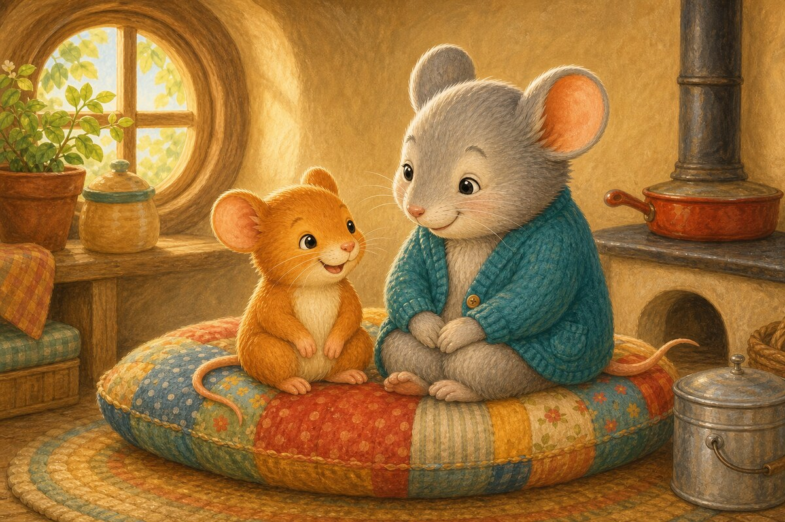
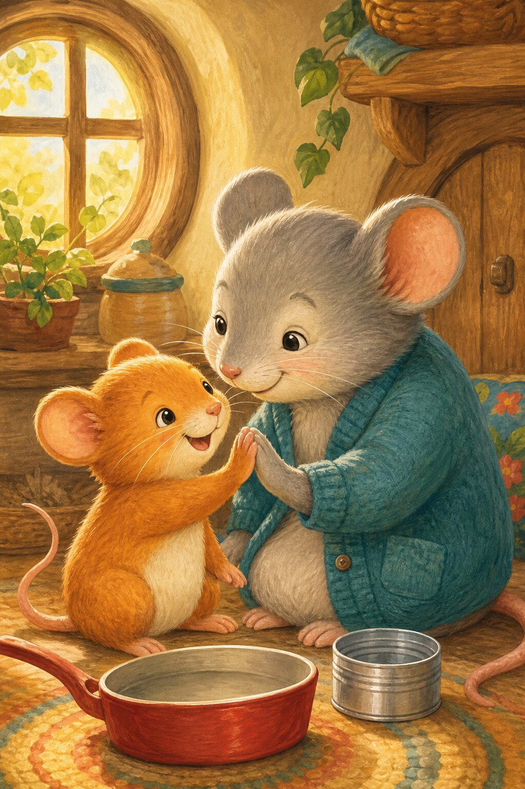
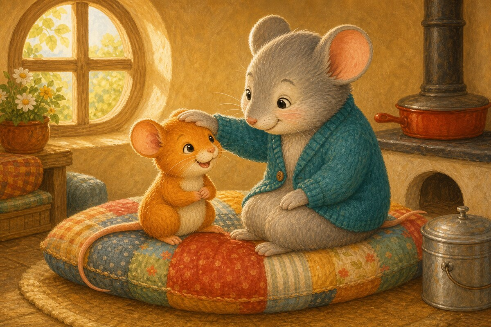
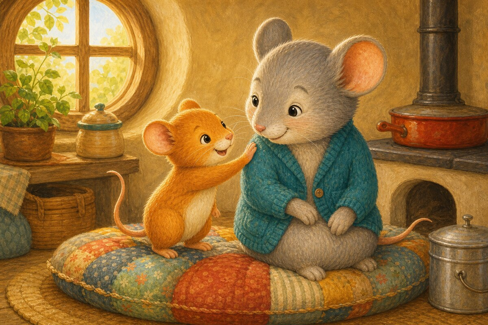
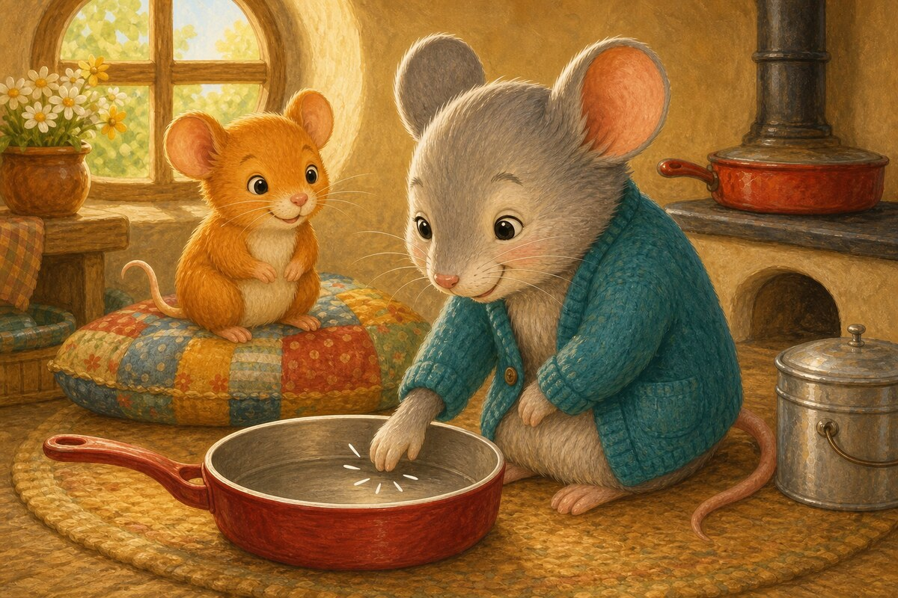
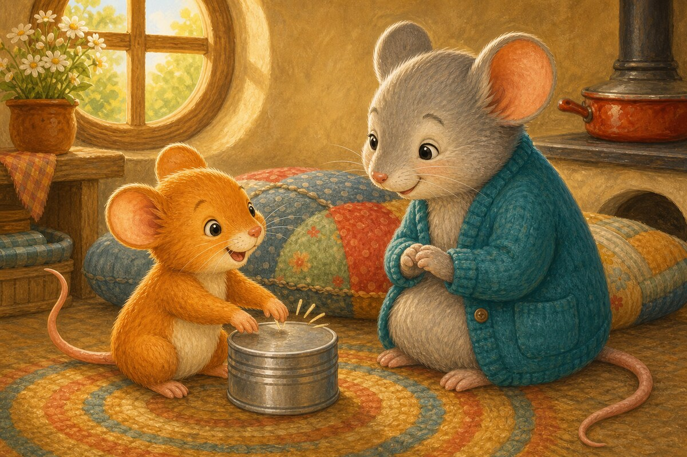
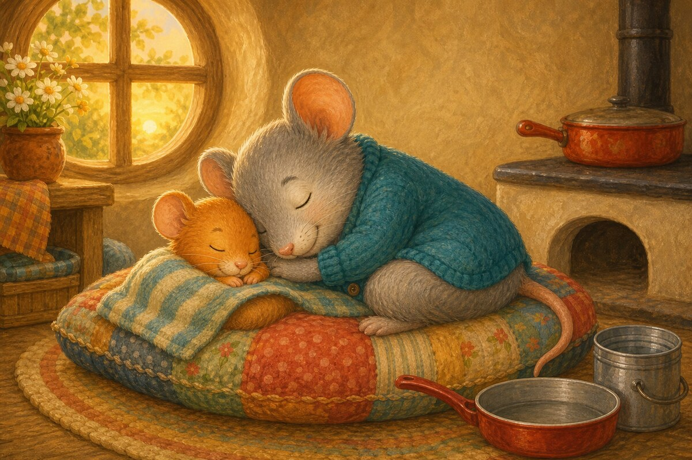

Page 1 of 6
Nan and Pip sit.
Take turns reading together. A 6-page decodable story focusing on Short A · s a t p i n.


Nan and Pip sit.

Nan pats Pip.

Pip pats Nan.

Nan taps a pan.

Pip taps a tin.

Nan and Pip nap.
This Stage 1 bridge repeats a small set of words so a new reader can build confidence. Point out and and a before reading. The endings in pats, taps, and nap may still need support.
SnackPack ABC & Alphabet continues with letter activities, read-together stories and more early phonics practice.